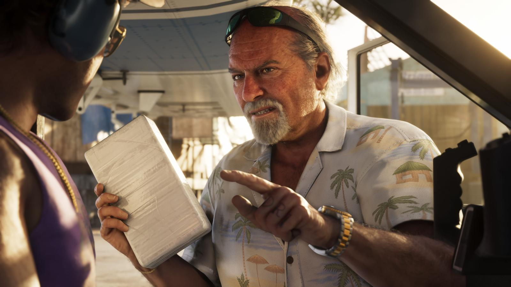
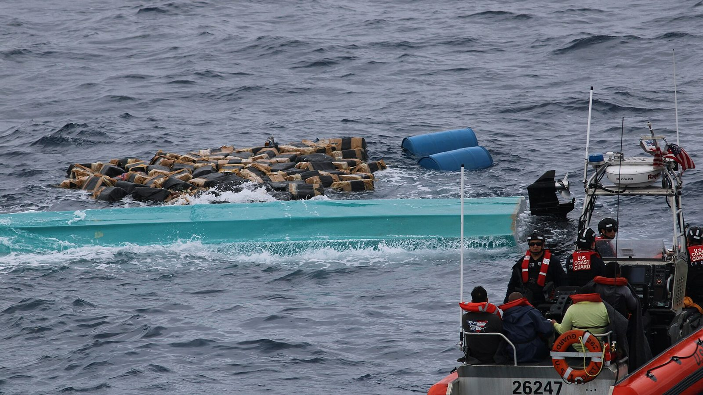
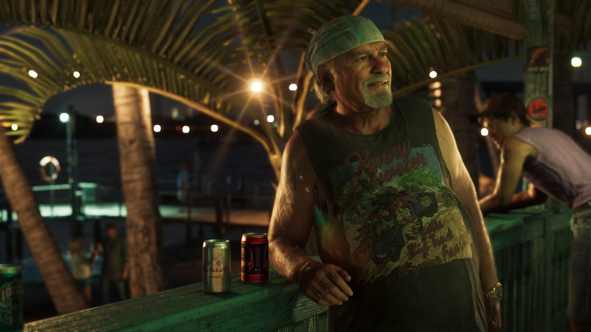

Брайан Хедер и контрабандисты Флорида-Кис
Опубликовано:
Реального человека-прототипа у Брайана нет. Но сам тип — старый контрабандист, который возит товар через острова и мангровые протоки, — взят из истории южной Флориды.


- По описанию Rockstar, Брайан — контрабандист старой закалки, у которого живёт Джейсон.
- Острова, мелководье и мангры южной Флориды десятилетиями были воротами контрабанды.
- Тюки, которые сбрасывали в море, моряки прозвали «квадратным групером».
- Береговая охрана США перехватывает грузы в этих водах до сих пор.
Что в игре
Брайан Хедер — один из ключевых персонажей. По описанию Rockstar, это контрабандист старой школы, который до сих пор возит товар через Кис. Джейсон живёт у него и работает на него. На кадрах: Брайан за рулём пикапа, в баре под пальмами и со свёртком в руках.

Что в реальности
В 1970–80-х годах южная Флорида стала главными воротами контрабанды в США. Тысячи островов, мелководье и мангровые протоки позволяли быстрым лодкам уходить от погони, а местные рыбаки знали каждый канал. Когда лодку догоняли, груз выбрасывали за борт, и тюки марихуаны потом прибивало к берегу. Их прозвали square grouper — «квадратный групер» (групер — популярная во Флориде рыба).
В июле 1983 года федеральные агенты провели облаву в Эверглейдс-Сити — рыбацком городке на краю болот. Арестовали большую часть взрослых мужчин города: рыбаки массово подрабатывали, перевозя тюки на своих лодках. Жизнь Брайана в игре — почти пересказ этой истории.
Совпадает и отличается
| Южная Флорида | Брайан Хедер | |
|---|---|---|
| Контрабанда по воде | Да, 1970–80-е и сейчас | 🟢 Возит через Кис |
| Старое поколение контрабандистов | Да | 🟢 «Старая школа» |
| Конкретный прототип | — | 🔵 Не назван |
| Что возит | Марихуана, кокаин | Узнаем в игре |
Источники: Rockstar Games (описание Brian Heder, кадры); U.S. Coast Guard (фото перехвата); история облавы в Эверглейдс-Сити, 1983.
Реальные фото: Фото: U.S. Coast Guard USCGD7 by Petty Officer 3rd Class Nicholas Strasburg, Public domain · Wikimedia Commons. Кадры игры: Rockstar Games.
Каждый день — одно сравнение: кадр игры рядом с реальным фото. Подписывайтесь:
YouTubeInstagramTikTok
 vs
vs
 vs
vs
 vs
vs